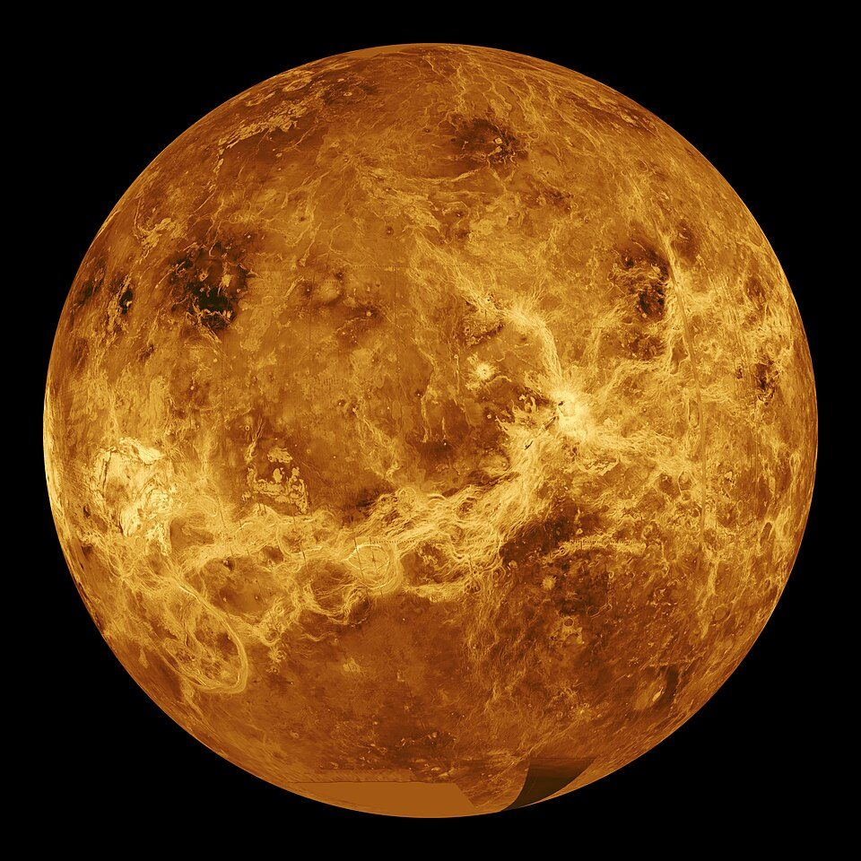
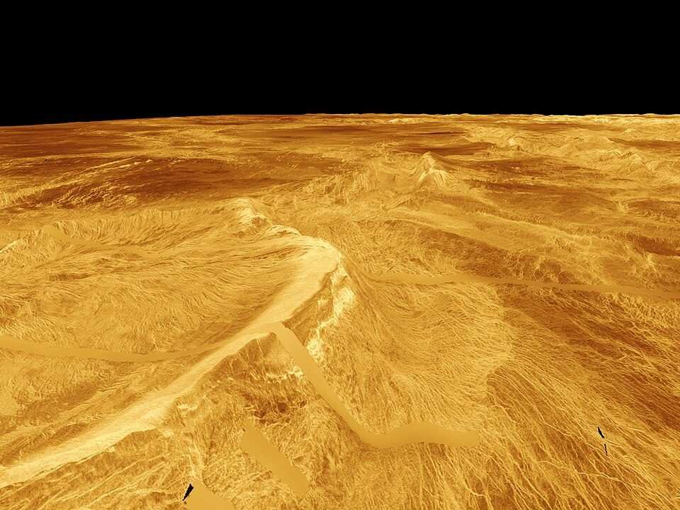

Venus
Earth's hellish twin: a planet of acid clouds and 465 °C where the Sun rises in the west.

.jpg){kind=link}
Venus is almost the same size as Earth and made of the same materials, which is why it is called our twin planet. But it is a hellish twin. It is the brightest object in the night sky after the Moon, the "morning star" or "evening star", and its brilliance comes from a cloud layer that reflects 75% of the sunlight.
The hottest planet
Although Mercury is closer to the Sun, Venus is the hottest planet: its surface sits at 465 °C day and night, at the poles and at the equator. The culprit is its atmosphere, 96% carbon dioxide, which traps heat in a runaway greenhouse effect.
The atmosphere is so dense that the pressure at the ground is 92 times Earth's, like being 900 metres under the sea. The clouds, about 50 km up, are made of droplets of sulphuric acid.
A day longer than its year
Venus spins backwards compared with almost every other planet, and astonishingly slowly: it takes 243 Earth days to turn once, longer than the 225 it takes to orbit the Sun. From its surface, the Sun would rise in the west and set in the east. Its upper atmosphere, however, circles the planet in just four days, with winds of 360 km/h.


A world of volcanoes
Beneath the clouds, the radar of the Magellan probe (1990–1994) revealed more than 1,600 large volcanoes and hundreds of thousands of small ones, lava plains and unique structures called coronae. There are almost no old craters, which suggests the whole surface was renewed some 500 million years ago. In 2023, old images confirmed that a volcanic vent had changed shape: Venus is still active.


The probes that reached hell
The Soviet Union sent the Venera probes. In 1970, Venera 7 became the first spacecraft to work on the surface of another planet, and in 1982 Venera 13 sent back the first colour photos of the Venusian ground before the heat destroyed it after 127 minutes. Three missions are planned for the coming decade: NASA's DAVINCI and VERITAS, and ESA's EnVision.
Life in the clouds?
About 50 km up, Venus has temperatures and pressures similar to Earth's. In 2020 scientists announced a possible detection of phosphine, a gas produced on our planet by living things. The finding is still hotly debated, but it revived the idea of looking for microscopic life in its clouds.
Videos to understand it better
- How To Terraform Venus (Quickly)Kurzgesagt – In a Nutshell · 22.8M views
- Venus 101 | National GeographicNational Geographic · 5.6M views
Videos are from YouTube and belong to their creators. They only load when you click them. See all videos →